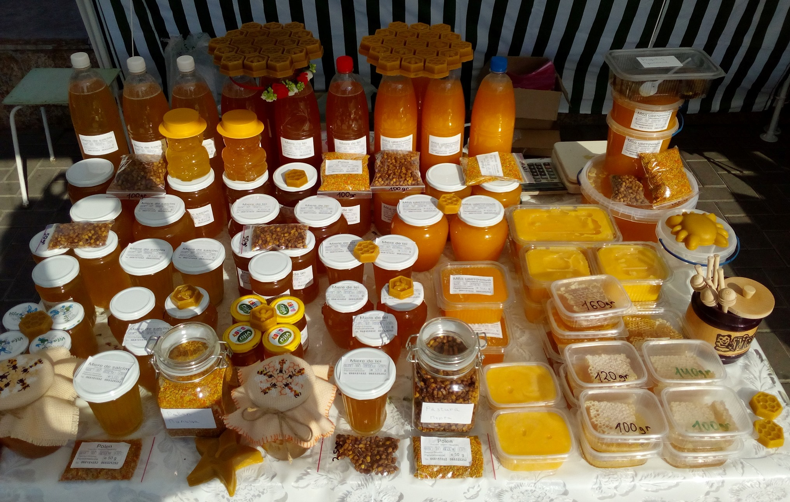
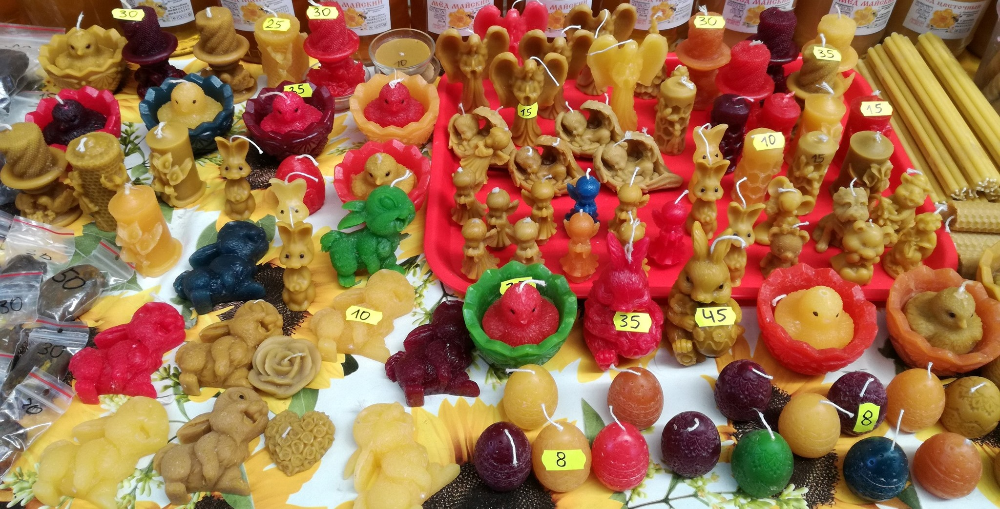
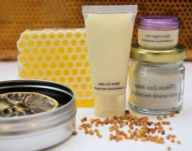

Mierea este foarte des folosită în alimentație, în cosmetologie sau in medicina traditionala.
| Stiati ca...? |
Nectarul adus în stup are un conținut mare de apă (peste 52%), dar căpăcirea se face numai după
ce
umiditatea este de maxim 20%, procentul de apă din miere fiind invers proporțional cu gradul de
umplere
al
fagurilor.
|
Există numeroși factori care influențează compoziția chimică a mierii: calitatea și compoziția materiei
prime (nectar sau mană), abundența acesteia, factorii climatici, modul de exploatare a albinelor, modul
de
recoltare, condiționare și conservare. Mierea obținută va avea caractere specifice condițiilor în care
s-a produs.
Cu ce sunt
albinile speciale? Что отличает пчел от других насекомых?
Beneficiul mierei si a cearei pentru sanatate:
Mierea este foarte mult apreciată de medicina populară. De asemenea are importante aplicații în
alimentația
artificială, în alimentația pre- și postoperatorie, în pediatrie și ginecologie.
Mierea se dovedeste, inca odata, a fi cel mai sigur si mai eficient antibiotic pe care omenirea l-a
cunoscut vreodata.
Treci pe pagina 3
Mierea contine numerosi antioxidanti - caracteristica importanta pentru oameni. In plus, aceasta are o
component antiinfectioasa si este folosita pentru vindecarea tusei, bolilor intestinale si ranilor
pielii.
Treci pe pagina 3
| Miere răspîndită (o au majoritatea apicultorilor) |
Miere rară (din livezi sau lanuri/câmpuri) |
| polifloră |
ciresi |
| floarea-soarelui |
visini |
| de mai |
zarzari |
| de tei |
măr |
| salcâm |
griș (гречка) |
Daca doriti sa vedeti preturile la miere, treceti pe Pagina 2
Lumânari din ceară si Ceară de albini:

Ceara de albini mai poate fi folosita si la incalzirea articulatiilor, pentru cei care sufera de
dureri
in genunchi si alte asa-numite "incheieturi". Treci pe pagina 3

Daca va intereseaza cum se aplica mierea si produsele stupului in cosmetologie, vizitati Pagina 4
Daca solicitati produse de stup care sunt rare, va rugam sa ne contactati, completand formularul
de mai
jos.
Acestea includ: polen, pastura (рус: перга), apilarnil (рус: трутневый гомогенат), laptisor de
regina
(рус:
маточное молочко), propolis, rame goale, stupi goi, familii de albine.
Contactati-ne